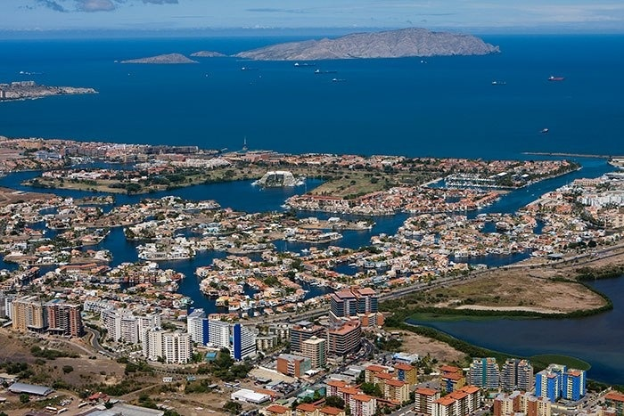

Estados que lo conforman
En el territorio venezolano, el Llano está conformado por los
estados Apure, Barinas, excepto los municipios Cruz Paredes y
Bolívar, Portuguesa, Cojedes y Guárico, y buena parte de los estados
Anzoátegui y Monagas. El Llano venezolano concentra el 14% de los
habitantes del país. En Venezuela el Llano se divide en tres
subregiones:
Apure
Barinas
Portuguesa
Cojedes
Guárico
Anzoátegui

Monogas